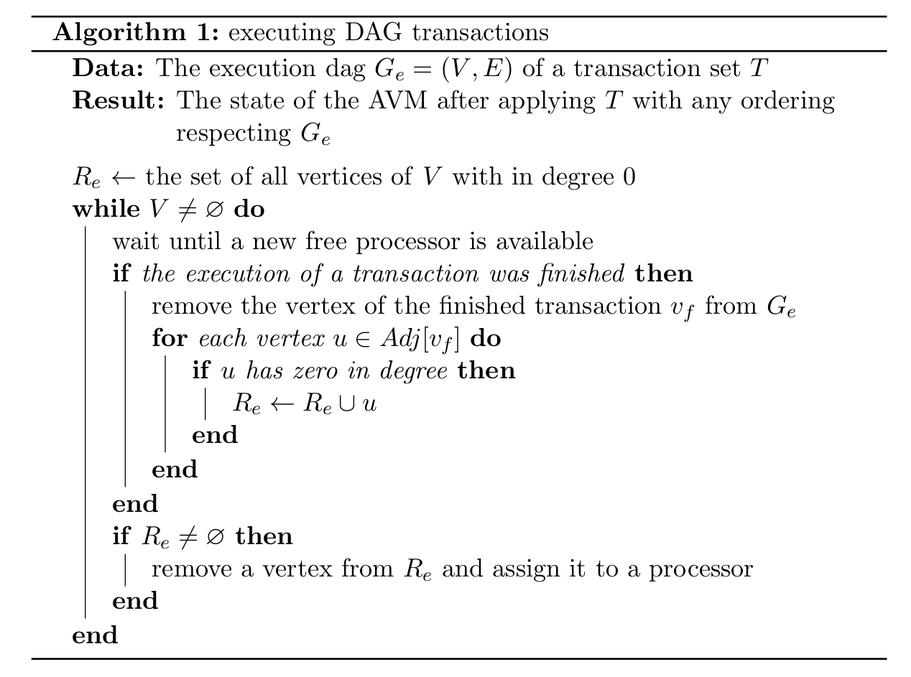
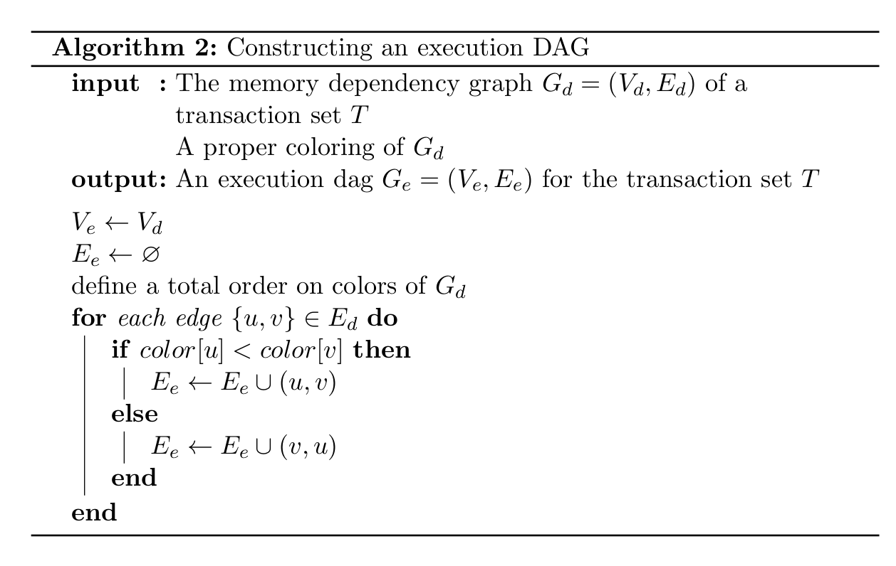
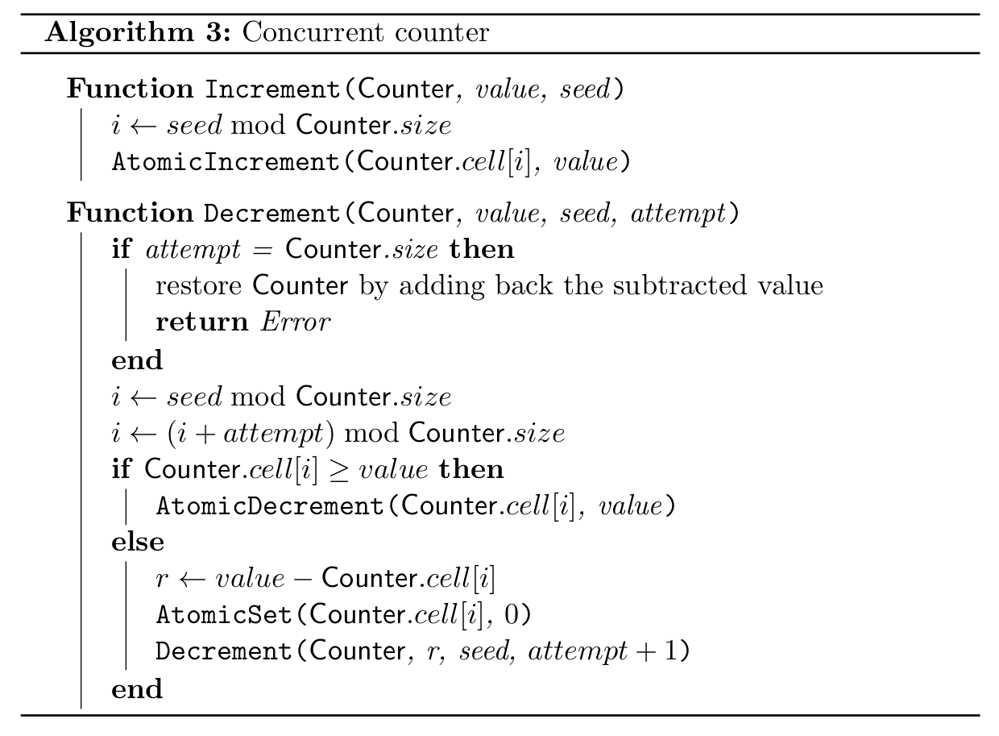
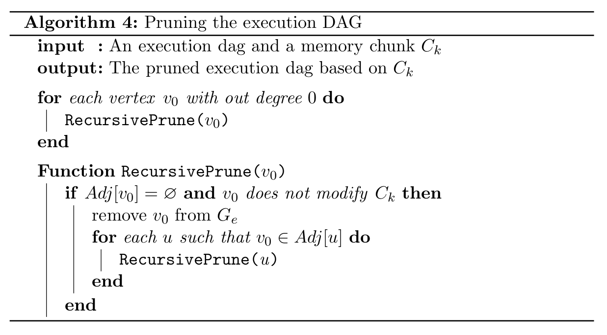

January 2021
The Argennon Virtual Machine (AVM) is an abstract computing machine for executing Argennon’s smart contracts. It is designed in a way that it could be efficiently implemented in either hardware or software.
...
The Argennon Virtual Machine expects that all type checking is done prior to run time, typically by a compiler, and does not have to be done by the Argennon Virtual Machine itself.
The instruction set of the Argennon Virtual Machine distinguishes its operand types using instructions intended to operate on values of specific types. For instance, iadd assumes that its operands are two 64-bit integers.
PC Register...
A call stack contains the information that is needed for restoring the state of the invoker of a method.
The Argennon Virtual Machine has a byte addressable memory which is divided into separate segments. Every segment belongs to a smart contract that has a unique applicationID. The AVM always has a single working memory segment and memory locations outside its current working segment can not be accessed. The only instructions which can change the current working segment are invoke_external, athrow and return instructions.
Every smart contract has its own memory segment. Hence, there is no way for a smart contract to access another smart contract’s memory. Interaction between smart contracts is done using invoke_external instruction, and a smart contract can invoke methods of another smart contract by this instruction.
A memory segment consists of five data areas:
Code Area
Constant Area
Local Frame
Operand Stack
Heap
All data areas except operand stack, have their own address space which starts from 0. Operand stack is a last-in-first-out (LIFO) stack and is not addressable. Every memory access instruction operates on its specific data areas.
The code area of a segment contains the byte-code of the smart contract which owns that segment. The AVM has no instructions for manipulating the code area. Installing, removing and updating smart contracts need to be done externally.
The constant area of a segment contains several kinds of constants, ranging from user defined constants to method address tables. A method address table stores method locations in the code area and their access type. The access type of a method can be either public or private. The AVM has no instructions for modifying the constant area.
Only public methods can be invoked by invoke_external instruction.
A local frame is used to store methods parameters and local variables. A new frame is created each time a method is invoked, and it is destroyed when its method invocation completes, whether the completion is normal or abrupt.
Every time a local frame is created, a corresponding empty last-in-first-out (LIFO) stack is created too. AVM instructions take operands from the operand stack, operate on them, and push the result back onto the operand stack. An operand stack is destroyed when its owner method completes, whether that completion is normal or abrupt.
The heap of a segment is a persistent memory area which is divided into pages. Memory locations inside every page have a separate address space that starts from 0, and each page can be referenced by an index that starts from 0. In other words, the address of every memory location inside a heap is a pair of indices: (pageIndex, offset). Different pages of a heap do not need to be equally sized.
The reason behind this paged design is that the heap is usually persisted using a block device. A heap with a paged structure could expose the underlying block based nature of the persistence layer to the application layer. In this way, the compiler or the programmer could better optimize the code for the persistence layer.
An Argennon Virtual Machine instruction consists of a one-byte opcode specifying the operation to be performed, followed by zero or more operands supplying arguments or data that are used by the operation. The number and size of the operands are determined solely by the opcode.
The Argennon Virtual Machine has three types of method invocation:
invoke_internal invokes a method from the current running smart contract.
invoke_external invokes a public method from another smart contract. It will change the current memory segment to the segment of the invoked smart contract.
invoke_native invokes a method that is not hosted by the Argennon virtual machine. By this instruction, high performance native methods of the hosting machine could become available to AVM smart contracts.
In the future, we may need to add special instructions for invoking interface and virtual methods...
Each time a method is invoked a new local frame and operand stack is created. The Argennon Virtual Machine uses local frames to pass parameters on method invocation. On method invocation, any parameters are passed in consecutive local variables stored in the method’s local frame starting from local variable 0. The invoker of a method writes the parameters in the local frame of the invoked method using arg instructions.
An exception is thrown programmatically using the athrow instruction. Exceptions can also be thrown by various Argennon Virtual Machine instructions if they detect an abnormal condition. Some exceptions are not catchable and will always abort the execution of the smart contract.
A method invocation completes normally if that invocation does not cause an exception to be thrown, either directly from the AVM or as a result of executing an explicit throw statement. If the invocation of the current method completes normally, then a value may be returned to the invoking method. This occurs when the invoked method executes one of the return instructions, the choice of which must be appropriate for the type of the value being returned (if any). Execution then continues normally in the invoking method’s local frame with the returned value (if any) pushed onto the operand stack.
A method invocation completes abruptly if an exceptions is thrown and is not caught by the current method. A method invocation that completes abruptly never returns a value to its invoker.
When a method completes, whether normally or abruptly, the call stack is used to restore the state of the invoker, including its local frame and operand stack, with the PC register appropriately restored and incremented to skip past the method invocation instruction. If the invoker was another smart contract, i.e. the invocation was made by an invoke_external instruction, the current memory segment will be changed to the invoker’s segment.
A thrown exception causes methods in the call stack to complete abruptly one by one, as long as the PC register is not pointing to a catch instruction. The catch instruction acts like a branch instruction that branches only if an exception is caught. When an external method invocation completes abruptly, before changing the current segment, all changes made to the heap area by that method call, including changes made to other segments, will be rolled back. So, when a method call completes abruptly, that method call essentially has no effect on the AVM state.
By using the athrow instruction properly, a programmer can make any method act like an atomic operation.
In blockchain applications, we usually need to authorize certain operations. For example, for sending an asset from a user to another user, first we need to make sure that the sender has authorized this operation. The Argennon virtual machine has no built in mechanism for authorizing operations, but it provides a rich set of cryptographic instructions for validating signatures and cryptographic entities. By using these instructions and passing signatures as parameters to methods, a programmer can implement the required logic for authorizing any operation.
The Argennon virtual machine has no instructions for issuing cryptographic signatures.
In addition to signatures, a method can verify its invoker by using get_parent instruction. This instruction gets the applicationID of the smart contract that is one level deeper than the current smart contract in the call stack. In other words, it returns the applicationID of the smart contract that has invoked the current smart contract. (if any)
...
...
For implementing the persistence layer of the AVM, we assume that we have access to an updatable zero-knowledge elementary database (ZK-EDB) with the following properties:
The ZK-EDB contains a mapping from a set of keys to a set of values.
Every state of the database has a commitment \(C\).
The ZK-EDB has a method \((D, p) = get(x)\), where \(x\) is a key and \(D\) is the associated data with \(x\), and \(p\) is a proof.
A user can use \(C\) and \(p\) to verify that \(D\) is really associated with \(x\), and \(D\) is not altered. Consequently, a user who can obtain \(C\) from a trusted source does not need to trust the ZK-EDB.
Having \(p\) and \(C\) a user can compute the commitment \(C'\) for the database in which \(D'\) is associated with \(x\) instead of \(D\).
We use a ZK-EDB for storing the AVM heap. We include the commitment of the current state of this DB in every block of the Argennon blockchain, so ZK-EDB servers need not be trusted servers.
Every page of AVM heap will be stored with a key of the form: applicationID|pageIndex (the | operator concatenates two numbers). Nodes do not keep a full copy of the AVM heap and for validating block certificates or emulating the AVM ( i.e. validating transactions) they need to connect to a ZK-EDB and retrieve the required pages of AVM heap. For better performance, nodes keep a cache of heap pages to reduce the amount of ZK-EDB access.
We also use a ZK-EDB for storing the code area of each segment, and we include the commitment of this DB in every block. Every code area will be divided into blocks and every block will be stored in the DB with applicationID|blockID as its key. Like heap pages, nodes keep a cache of code area blocks.
Unlike heap pages, the AVM is not aware of different blocks of code area.
Argennon has four types of transaction:
avmCall essentially is an invoke_external instruction that invokes a method from an AVM smart contract. Users interact with AVM smart contracts using these transactions. Transferring all assets, including ARGs, is done by these transactions.
installApp installs an AVM smart contract and determines the update policy of the smart contract: if the contract is updatable or not, which accounts can update or uninstall the contract, and so on.
unInstallApp removes an AVM smart contract.
updateApp updates an AVM smart contract.
All types of Argennon transactions contain an invoke_external instruction which calls a special method from ARG smart contract that transfers the proposed fee of the transaction in ARGs from a sender account to the fee sink accounts.
Every transaction is required to exactly specify what heap locations or code area addresses it will access. This enables validators to start retrieving the required memory blocks from available ZK-EDB servers as soon as they see a transaction, and they won’t need to wait for receiving the new proposed block. A transaction that tries to access a memory location that is not included in its access lists, will be rejected. Users could use smart contract oracles to predict the list of memory blocks their transactions need. See Section for more details.
Every block of the Argennon blockchain corresponds to a set of transactions. We store the commitment of this transaction set in every block, but we don’t keep the set itself. To be able to detect replay attacks, we require every signature that a user creates to have a nonce. This nonce consists of the issuance round of the signature and a sequence number: (issuance, sequence). When a user creates more than one signature in a round, he must sequence his signatures starting from 0 (i.e. the sequence number restarts from 0 in every round). We define a maximum lifetime for signatures, so a signature is invalid if currentRound - issuance > maxLifeTime or if a signature of the same user with a bigger or equal nonce is already used (i.e. is recorded in the blockchain). A nonce is bigger than another nonce if it has an older issuance. If two nonces have an equal issuance, the nonce with the bigger sequence number will be considered bigger.
To be able to detect invalid signatures, we keep the maximum nonce of used digital signatures per user. When the difference between issuance component of this nonce and the current round becomes bigger than the maximum allowed lifetime of a signature, this information can be safely deleted. As a result, we will not have the problem of "un-removable empty accounts" like Ethereum.
The only information that Argennon nodes are required to store is the most recent block of the Argennon blockchain. Every block of the Argennon blockchain contains the following information:
| Block |
|---|
| commitment to the ZK-EDB storing heap pages |
| commitment to the ZK-EDB storing code areas |
| commitment to the set of transactions |
| previous block hash |
| random seed |
For confirming a new block, nodes that are not validators only need to verify the block certificate. For verifying a block certificate, a node needs to know the ARG balances of validators, but it doesn’t need to emulate the AVM execution.
On the other hand, nodes that are chosen to be validators, for validating a new block, need to emulate the execution of the Argennon virtual machine. To do so, first they retrieve all heap pages and code area blocks they need from available ZK-EDBs. Then, they emulate the execution of AVM instructions and validate all the transactions included in the new block. This will modify some pages of the AVM memory, so they update the ZK-EDB commitments based on the modified pages and verify the commitments included in the new block. Validators also calculate and verify the commitment to the new block’s transaction set.
Validators do not need to write the modified pages back to ZK-EDB servers. ZK-EDBs will receive the new block, and they will update their database by emulating the AVM execution.
Every transaction in the Argennon blockchain starts with an invoke_external instruction which calls a special method from ARG smart contract. This method will transfer the proposed fee of the transaction in ARGs from a sender account to the fee sink accounts. Argennon has two fee sink accounts: execFeeSink collects execution fees and dbFeeSink collects fees for ZK-EDBs. The Protocol decides how to distribute the transaction fee between these two fee sink accounts.
When a block is added to the blockchain, the proposer of that block will receive a share of the block fees. Consequently, a block proposer is always incentivized to include more transactions in his block. However, if he puts too many transactions in his block and the validation of the block becomes too difficult, some validators may not be able to validate all transactions on time. If a validator can not validate a block in the required time, he will consider the block invalid. So, when a proposed block contains too many transactions, the network may reach consensus on another block, and the proposer of that block will not receive any fees. As a result, a proposer is incentivized to use network transaction capacity optimally.
On the other hand, we believe that the proposer does not have enough incentives for optimizing the storage size of the transaction set. Therefore, we require that the size of the transaction set of every block in bytes be lower than a certain threshold.
Validators need to spend resources for validating transactions. When a validator starts the emulation of the AVM to validate a transaction, solely from the code he can’t predict the time the execution will finish. This will give an adversary an opportunity to attack the network by broadcasting transactions that never ends. Since, validators can not finish the execution of these transactions, the network will not be able to charge the attacker any fees, and he would be able to waste validators resources for free.
To mitigate this problem, we require that every transaction specify a cap for all the resources it needs. This will include memory, network and processor related resources. Also, the protocol defines an execution cost for every AVM instruction reflecting the amount of resources its emulation needs. This will define a standard way for measuring the execution cost of any avmCall transaction. Every avmCall transaction is required to specify a maximum execution cost. If during emulation it reaches this maximum cost, the transaction will be considered failed and the network can receive the proposed fee of that transaction.
Every avmCall transaction is required to provide the following information as an upper bound for the resources it needs:
Execution cost
A list of heap/code-area locations for reading
A list of heap locations for writing
A list of heap pages it will deallocate
Number and size of heap pages it will allocate
If a transaction tries to violate any of these predefined limitations, for example, if it tries to read a memory location that is not included in its reading list, it will be considered failed and the network can receive the proposed fee of that transaction.
A transaction always pays all of its proposed fee, no matter how much of its predefined resources were not used in the final emulation.
The incentive mechanism for ZK-EDB servers should have the following properties:
It incentivizes storing all memory blocks, whether a heap page or a code area block, and not only those which are used more frequently.
It incentivizes ZK-EDB servers to actively provide the required memory blocks for validators.
Making more accounts will not provide any advantages for a ZK-EDB server.
For our incentive mechanism, we require that every time a validator receives a memory block from a ZK-EDB, after validating the data, he give a receipt to the ZK-EDB. In this receipt the validator signs the following information:
ownerAddr: the ARG address of the ZK-EDB.
receivedBlockID: the ID of the received memory block.
round: the current round number.
In a round, an honest validator never gives a receipt for an identical memory block to two different ZK-EDBs.
To incentivize ZK-EDB servers, a lottery will be held every round and a predefined amount of ARGs from dbFeeSink account will be distributed between winners as a prize. This prize will be divided equally between all winning tickets of the lottery.
One ZK-EDB server could own multiple winning tickets in a round.
To run this lottery, every round, based on the current block seed, a collection of valid receipts will be selected randomly as the winning receipts of the round. A receipt is valid in the round \(r\) if:
The signer was a validator in the round \(r - 1\) and voted for the agreed-upon block.
The data block in the receipt was needed for validating the previous block.
The receipt round number is \(r - 1\).
The signer did not sign a receipt for the same data block for two different ZK-EDBs in the previous round.
For selecting the winning receipts we could use a random generator:
IF random(seed|validatorPK|receivedBlockID) < winProbability THEN
the receipt issued by validatorPK for receivedBlockID is a winnerrandom() produces uniform random numbers between 0 and 1, using its input argument as a seed.
validatorPK is the public key of the signer of the receipt.
receivedBlockID is the ID of the memory block that the receipt was issued for.
winProbability is the probability of winning in every round.
seed is the current block seed.
| is a concatenation operator.
The winners of the lottery were validators one round before the lottery round.
Also, based on the current block seed, a random memory block, whether a heap page or a code area block, is selected as the challenge of the round. A ZK-EDB that owns a winning receipt needs to broadcast a winning ticket to claim his prize. The winning ticket consists of a winning receipt and a solution to the round challenge. Solving a round challenge requires the content of the memory block which was selected as the round challenge. This will encourage ZK-EDBs to store all memory blocks.
A possible choice for the challenge solution could be the cryptographic hash of the content of the challenge memory block combined with the ZK-EDB ARG address: hash(challenge.content|ownerAddr)
The winning tickets of the lottery of the round \(r\) need to be included in the block of the round \(r\), otherwise they will be considered expired. Validation and prize distribution for the winning tickets of the round \(r\) will be done in the round \(r + 1\). This way, the content of the challenge memory block could be kept secret during the lottery round. Every winning ticket will get an equal share of the lottery prize.
Every \(k\) round the protocol chooses a price per byte for AVM memory. When a smart contract executes a heap allocation instruction, the protocol will automatically deduce the cost of the allocated memory from the ARG address of the smart contract.
To determine the price of AVM memory, Every \(k\) round, the protocol calculates dbFee and memTraffic values. dbFee is the aggregate amount of collected database fees, and memTraffic is the total memory traffic of the system. For calculating the memory traffic of the system the protocol considers the total size of all the memory pages that were accessed for either reading or writing during a time period. These two values will be calculated for the last \(k\) rounds and the price per byte of AVM memory will be a linear function of dbFee/memTraffic
When a smart contract executes a heap de-allocation instruction, the protocol will refund the cost of de-allocated memory to the smart contract. Here, the current price of AVM memory does not matter and the protocol calculates the refunded amount based on the average price the smart contract had paid for that allocated memory. This will prevent smart contracts from profit taking by trading memory with the protocol.
Every block of the Argennon blockchain contains a list of transactions. This list is an ordered list and the effect of its contained transactions must be applied to the AVM state sequentially as they appear in the ordered list. This ordering is solely chosen by the block proposer, and users should not have any assumption about the ordering of transactions in a block.
The fact that block transactions constitute a sequential list, does not mean they can not be executed and applied to the AVM state concurrently. Many transactions are actually independent and the order of their execution does not matter. These transactions can be safely validated in parallel by validators.
A transaction can change the AVM state by modifying either the code area or the AVM heap. In Argennon, all transactions declare the list of memory locations they want to read or write. This will enable us to determine the independent sets of transactions which can be executed in parallel. To do so, we define the memory dependency graph \(G_d\) as follows:
\(G_d\) is an undirected graph.
Every vertex in \(G_d\) corresponds to a transaction and vice versa.
Vertices \(u\) and \(v\) are adjacent in \(G_d\) if and only if \(u\) has a memory location \(L\) in its writing list and \(v\) has \(L\) in either its writing list or reading list.
If we consider a proper vertex coloring of \(G_d\), every color class will give us an independent set of transactions which can be executed concurrently. To achieve the highest parallelization, we need to color \(G_d\) with minimum number of colors. The chromatic number of the memory dependency graph thus shows how good a transaction set could be run concurrently.
Graph coloring is computationally NP-hard. However, in our use case we don’t need to necessarily find an optimal solution. An approximate greedy algorithm will perform well enough in most circumstances.
After constructing the memory dependency graph of a transaction set, we can use it to construct the execution DAG of transactions. The execution DAG of a transaction set \(T\) is a directed acyclic graph \(G_e\) which has the execution invariance property:
Every vertex in \(G_e\) corresponds to a transaction in \(T\) and vice versa.
Applying the transactions of \(T\) in any order that respects \(G_e\) will result in the same AVM state.
An ordering of transactions of \(T\) respects \(G_e\) if for every directed edge \((u,v)\) in \(G_e\) the transaction \(u\) comes before the transaction \(v\) in the ordering.
Having the execution DAG of a set of transactions, using Algorithm , we can apply the transaction set to the AVM state concurrently, using multiple processor, while we can make sure that the resulted AVM state will always be the same no matter how many processor we have used.

By replacing every undirected edge of a memory dependency graph with a directed edge in such a way that the resulted graph has no cycles, we will obtain a valid execution DAG. Thus, from a memory dependency graph different execution DAGs can be constructed with different levels of parallelization ability.
If we assume that we have unlimited number of processors and all transactions take equal time for executing, it can be shown that by providing a minimal graph coloring to Algorithm as input, the resulted DAG will be optimal, in the sense that it results in the minimum overall execution time.

The block proposer is responsible for proposing an efficient execution DAG alongside his proposed block which will determine the ordering of block transactions and help validators to validate transactions in parallel. Since with better parallelization a block can contain more transactions, a proposer is incentivized enough to find a good execution DAG for transactions.
We know that in Argennon every transaction needs to transfer its proposed fee to the feeSink accounts first. This essentially makes every transaction a reader and a writer of the memory locations which store the balance record of the feeSink accounts. As a result, all transactions in Argennon will be dependant and parallelism will be completely impossible. Actually, any account that is highly active, for example the account of an exchange or a payment processor, could become a concurrency bottleneck of the system, making all transactions which interact with them dependant.
This problem can be easily solved by using a concurrent counter (CC) for storing the balance of this type of accounts. A concurrent counter is a data structure which improves concurrency by using multiple memory locations for storing a single counter. The value of the concurrent counter is equal to the sum of its sub counters and it can be incremented or decremented by incrementing/decrementing any of the sub counters. This way, a concurrent counter trades concurrency with memory usage.
A pseudocode for implementing a concurrent counter (CC) which returns an error when the value of the counter becomes negative, follows:

It should be noted that in a blockchain application we don’t have concurrent threads and therefore we don’t need atomic functions. For usage in a smart contract, the atomic functions of this pseudocode can be implemented like normal functions.
Concurrent counter data structure is a part of the AVM standard library, and any smart contract can use this data structure for storing the balance of highly active accounts.
In order to further increase the concurrency level of Argennon, we can divide the AVM memory into chunks. Each memory chunk can be persisted using a different ZK-EDB, hence having its own commitment. Then, the consensus on new values of the commitment of any chunk can be achieved by different voting committees.
If a transaction does not modify a memory chunk and in the transaction ordering of the block it comes after any transaction which modifies that chunk, then the execution of that transaction is not needed for calculating the new commitment of the chunk. Consequently, the voting committee of the memory chunk can safely ignore such a transaction. The execution DAG of transactions can be used for finding and pruning these transactions as we see in Algorithm .

If we choose chunks in a way that most transactions only modify memory locations of one chunk, likely the transactions of a block are divided between voting committees and are validated in parallel.
Because the voting committees are selected by random sampling, by choosing large enough samples we can make sure that having multiple voting committees will not change the security properties of the Argennon agreement protocol.
The consensus protocol of Argennon is similar to Algorand with a few minor improvements.
In a proof of stake system the influence of a user in the consensus protocol should be proportional to the amount of stake the user has in the system. Conventionally in these systems, for estimating a user’s stake, we use the amount of native system tokens the user is holding. Unfortunately, one problem with this approach is that a strong attacker may be able to obtain a considerable amount of system tokens, for example by borrowing from a DEFI application, and use this stake to attack the system.
To mitigate this problem, for calculating a user’s stake at the time step \(t\), instead of using the raw ARG balance, we use the minimum of a trust value the system has calculated for the user and the user’s ARG balance:
\[S_{u,t} = \min (B_{u,t}, Trust_{u,t})\]
Where:
\(S_{u,t}\) is the stake of the user \(u\) at the time step \(t\).
\(B_{u,t}\) is the ARG balance of the user \(u\) at the time step \(t\).
\(Trust_{u,t}\) is an estimated trust value for the user \(u\) at the time step \(t\).
The agreement protocol, at the time step \(t\), will use \(\sum_{u}S_{u,t}\) to determine the required number of votes for the confirmation of a block, and we let \(Trust_{u,t} = M_{u,t}\), where \(M_{u,t}\) is the exponential moving average of the ARG balance of the user \(u\) at the time step \(t\).
In our system a user who held ARGs and participated in the consensus for a long time is more trusted than a user with a higher balance whose balance has increased recently. An attacker who has obtained a large amount of ARGs, also needs to hold them for a long period of time before being able to attack the system.
For calculating the exponential moving average of a user’s balance at the time step \(t\), we can use the following recursive formula:
\[M_{u,t} = (1 - \alpha) M_{u,t-1} + \alpha B_{u,t} = M_{u,t-1} + \alpha (B_{u,t} - M_{u,t-1})\]
Where the coefficient \(\alpha\) is a constant smoothing factor between \(0\) and \(1\) which represents the degree of weighting decrease, A higher \(\alpha\) discounts older observations faster.
Usually an account balance will not change in every time step, and we can use older values of EMA for calculating \(M_{u,t}\): (In the following equations the \(u\) subscript is dropped for simplicity)
\[M_{t} = (1 - \alpha)^{t-k}M_{k} + [1 - (1 - \alpha)^{t - k}]B\]
Where:
\[B = B_{k+1} = B_{k+2} = \dots = B_{t}\]
We know that when \(|nx| \ll 1\) we can use the binomial approximation \({(1 + x)^n \approx 1 + nx}\). So, we can further simplify this formula:
\[M_{t} = M_{k} + (t - k) \alpha (B - M_{k})\]
For choosing the value of \(\alpha\) we can consider the number of time steps that the trust value of a user needs for reaching a specified fraction of his account balance. We know that for large \(n\) and \(|x| < 1\) we have \((1 + x)^n \approx e^{nx}\), so by letting \(M_{u,k} = 0\) and \(n = t - k\) we can write:
\[\alpha =- \frac{\ln\left(1 - \frac{M_{n+k}}{B}\right)}{n}\]
The value of \(\alpha\) for a desired configuration can be calculated by this equation. For instance, we could calculate the \(\alpha\) for a relatively good configuration in which \(M_{n+k} = 0.8B\) and \(n\) equals to the number of time steps of 10 years.
In our system a newly created account will not have voting power for some time, no matter how high its balance is. While this is a desirable property, in case a large proportion of total system tokens are transferred to newly created accounts, it can result in too much voting power for older accounts. This may decrease the degree of decentralization in our system.
However, this situation is easily detectable by comparing the total stake of the system with the total balance of users. If after confirming a block the total stake of the system goes too low and we have:
\[\sum_{u}S_{u,t} < \gamma \sum_{u}B_{u,t}\]
The protocol will perform a time shift in the system: the time step of the system will be incremented for \(m\) steps while no blocks will be confirmed. This will increase the value of \(M_{u,t}\) for new accounts with a non-zero balance, giving them more influence in the agreement protocol.
For calculating the value of \(m\) which determines the amount of time shift in the system, we should note that when \(B_{u,t} = B_{u, t-1} = B_u\), we can derive a simple recursive rule for the stake of a user:
\[S_{u,t} = (1 - \alpha) S_{u,t-1} + \alpha B_u\]
Therefore, we have:
\[\sum_{u}S_{u,t} = (1 - \alpha) \sum_{u}S_{u,t - 1} + \alpha \sum_{u}B_u\]
This equation shows that when the balance of users is not changing over time the total stake of the system is the exponential average of the total ARGs of the system. Consequently, when we shift the time for \(m\) steps, we can calculate the new total stake of the system from the following equation:
\[\sum_{u}S_{u,t+m} = (1 - \alpha)^{m}\sum_{u}S_{u,t} + [1 - (1 - \alpha)^{m}]\sum_{u}B_u\]
Hence, if we want to increase the total stake of the system from \(\gamma \sum_{u}B_u\) to \(\lambda \sum_{u}B_u\), we can obtain \(m\) from the following formula, assuming \(\alpha\) is small enough:
\[m = \frac{1}{\alpha} \ln \left(\frac{1 - \gamma}{1 - \lambda}\right)\]
A smart contract oracle is a full AVM emulator that keeps a full local copy of AVM memory and can emulate AVM execution without accessing a ZK-EDB. Smart contract oracles can be used for reporting useful information about avmCall transactions such as accessed AVM heap or code area locations, exact amount of execution cost, and so on.